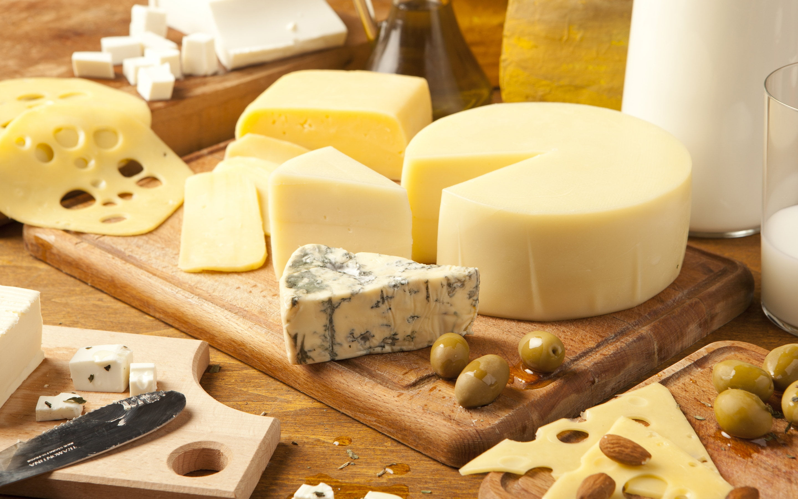

O queijo é dos alimentos mais apreciados no mundo, se destacando pelo seu sabor, aroma e variedade de formas em que pode ser consumido: fatiado, derretido, ralado, assado, grelhado, em sanduíches e fartas tábuas acompanhado de outras delícias.
O Queijeiros™ é uma comunidade formada em 2022 por Augusto Tognetti para discutir esse amor universal pelo queijo, apresentando seus modos de preparo e consumo.
